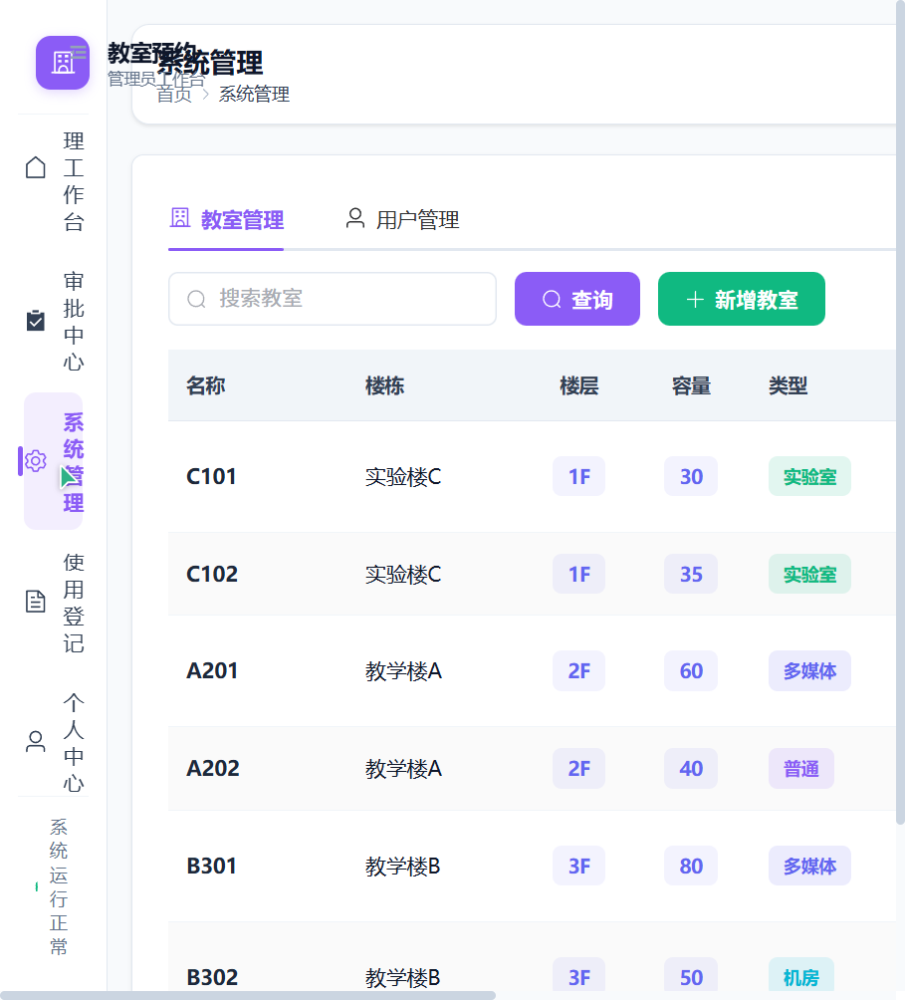
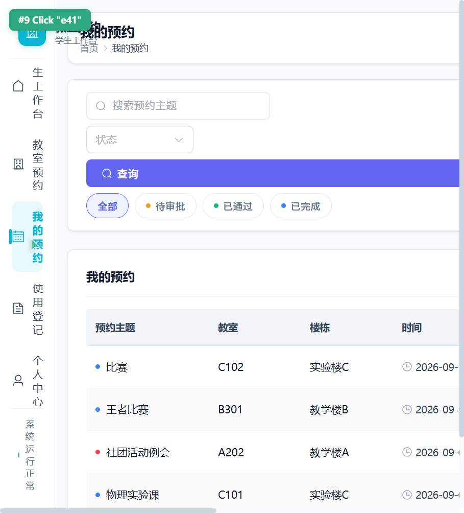
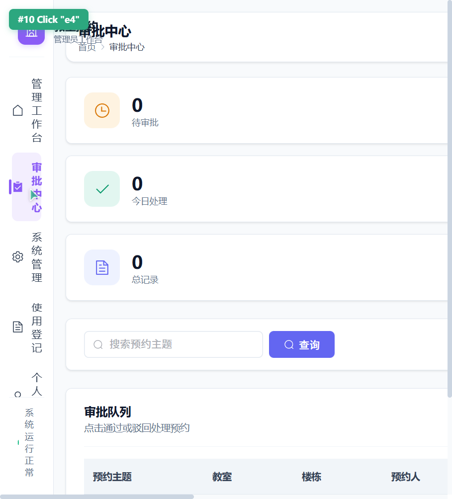
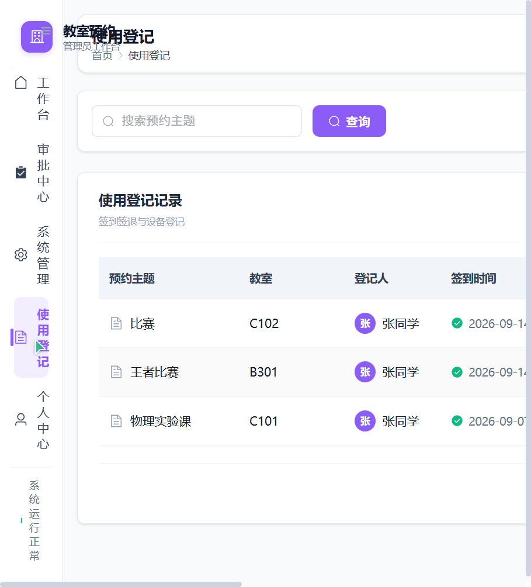
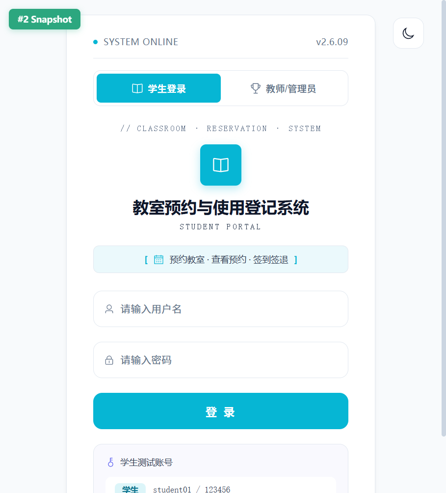
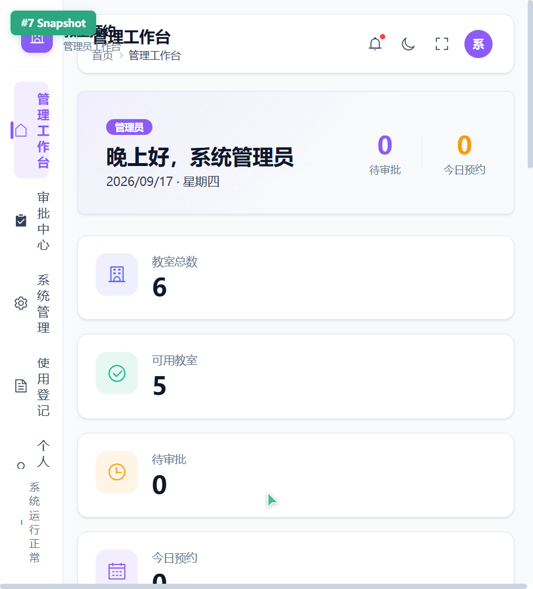

本人作为项目组长，负责教室预约与使用登记系统的整体设计与开发工作。本系统是一个面向高校场景的教室资源管理平台，核心解决"预约—审批—使用—登记"的完整业务闭环。本人具体应完成的工作包括：
截至目前，项目已完成阶段1至阶段5的核心功能开发，系统主流程（预约→审批→签到→签退）已完整跑通。以下按模块详细说明已完成的工作。
（1）创建 Spring Boot 3 后端工程，配置 MySQL 8.0 数据库连接与 MyBatis ORM 框架，引入 Spring Security Crypto（BCrypt）、SpringDoc OpenAPI（Swagger）、Redis、JWT 等依赖。
（2）设计并创建数据库 4 张核心表：classroom（教室）、sys_user（用户）、reservation（预约）、usage_log（使用登记），每张表均配置主键、外键约束和查询索引，编写完整的建表与初始数据 SQL 脚本。
（3）创建实体类与 Mapper 接口，开启 MyBatis 驼峰映射，打通 Java 代码与数据库的映射关系。
（1）实现教室列表分页查询接口，支持按楼栋、类型、状态、关键字、最小容量（minCapacity）等条件筛选，返回统一的 Result 响应格式。容量筛选通过 SQL 条件 capacity >= #{minCapacity} 实现。
（2）实现指定日期时段空闲教室查询接口（GET /api/classrooms/available）：通过 NOT EXISTS 子查询排除指定时段内已有"已通过"预约的教室，仅返回状态为可用且无时段冲突的教室。前端教室列表增加日期时段选择面板，用户可查询某一时段内的空闲教室。
（3）前端教室列表页面采用卡片网格布局，每张卡片展示教室真实图片（按类型映射：实验室/多媒体/机房/普通教室）、容量进度条、设备设施标签，并支持条件筛选和空闲时段查询。
（4）配置 CORS 跨域支持，前端通过 Axios 调用后端接口获取教室数据。

（1）实现预约提交接口，使用 Jakarta Validation 对教室ID、主题、起止时间等参数进行校验，业务层校验教室是否存在、是否可用、时间是否合法、人数是否超出容量。
（2）实现时段冲突检测：通过 SQL 查询该教室在请求时段内是否已有"待审批"或"已通过"的预约，若存在冲突则拒绝创建并提示用户。
（3）实现本人预约查询接口，支持按状态筛选（待审批/已通过/已驳回/已取消/已完成）与分页，预约状态使用枚举类 + TypeHandler 实现数据库字符串与 Java 枚举的转换。
（4）前端预约表单含主题、目的、起止时间、预计人数等字段，提交成功后预约状态默认为"待审批"。

（1）实现管理员审核接口：通过审批将预约状态改为 APPROVED 并记录审批人和审批时间；驳回审批需填写驳回原因，状态改为 REJECTED。只有 PENDING 状态的预约可被审核。
（2）实现取消预约功能：用户只能取消自己的预约，取消时必须填写取消原因。取消增加了严格的时间校验（指导书 4.2）：仅 APPROVED 状态的预约可取消，且当前时间必须早于预约开始时间，已开始的预约不允许取消。
（3）实现批量预约功能（选做 7.3）：支持按周次批量生成预约，自动跳过与已有预约冲突的时段，返回成功创建数和冲突跳过数。
（4）实现爽约标记查询（选做 7.3）：查询状态为已通过、已过结束时间且未签到的预约，标记为爽约，便于管理员追踪不规范使用行为。
（5）所有写操作均使用 @Transactional(rollbackFor = Exception.class) 注解，确保数据一致性。

（1）实现签到接口：校验预约必须为已通过状态、当前用户为预约人、预约未结束、未重复签到，签到成功后创建使用登记记录。
（2）实现签退接口：填写实际参会人数、设备状况、卫生评分、备注，签退成功后自动将预约状态更新为 COMPLETED。
（3）实现重复登记拦截与已结束预约拦截，防止脏数据产生。
（4）前端使用登记列表支持查看备注（点击设备状况标签弹出备注详情）。

（1）实现 JWT 登录认证：用户登录成功后生成 JWT Token 并存入 Redis，实现 Token 的主动失效（登出时删除 Redis Key）。
（2）实现 JWT 拦截器：对所有 /api/** 路径进行鉴权，白名单放行登录、注册、Swagger 等路径。
（3）实现角色权限控制：系统分为学生、教师、管理员三种角色，不同角色登录后跳转至对应的工作台，侧边栏菜单根据角色动态显示。
（4）密码使用 BCrypt 加密存储，启动时自动修复 SQL 脚本中的明文密码。

（1）实现统计数据接口：返回教室总数、可用教室数、维护中教室数、总用户数、各状态预约数等统计指标。
（2）实现教室使用率统计（选做 7.1）：按教室统计预约次数和使用率（已完成预约数 / 教室总可预约时段数），按周次统计预约趋势（YEARWEEK 聚合），为管理员提供数据决策支持。
（3）前端管理员工作台展示统计卡片（6项关键指标）、预约状态饼图（ECharts）、教室状态柱状图、待审批列表，数据实时从后端获取。

（1）三角色主题色机制：学生（青蓝）、教师（靛紫）、管理员（紫粉），通过 CSS 变量 --role-primary 统一控制全站配色，主题色随用户角色自动切换并持久化存储。
（2）教室卡片使用真实图片（按类型从 Unsplash 下载），鼠标悬停时图片微放大，状态标签和类型徽章在半透明渐变遮罩上清晰可辨。
（3）统一列表页四段式布局（筛选区→操作栏→表格→分页），状态标签颜色语义明确，空状态与加载态视觉友好。
对照《课程设计指导书》全部 25 项任务要求，截至中期检查时所有任务均已完成，完成情况如下表所示：
| 任务编号 | 任务内容 | 完成状态 | 说明 |
|---|---|---|---|
| 1.1-1.5 | 项目基础搭建与数据库设计 | 已完成 | 4张核心表、实体类、Mapper、统一响应格式 |
| 2.1 | 教室列表与容量筛选 | 已完成 | 支持 minCapacity 最小容量筛选 |
| 2.2 | 指定时段空闲教室查询 | 已完成 | NOT EXISTS 排除冲突时段，前端时段查询面板 |
| 3.1-3.3 | 预约申请与冲突检测 | 已完成 | 6层校验链、时段冲突检测、本人预约查询 |
| 4.1 | 管理员审核 | 已完成 | 通过/驳回，记录审批人与时间 |
| 4.2 | 取消预约时间校验 | 已完成 | 仅APPROVED且未开始可取消 |
| 5.1-5.3 | 签到签退与使用登记 | 已完成 | 设备状况、卫生评分、备注 |
| 6.1 | 测试条件清单 | 已完成 | 54个测试用例，覆盖6大模块 |
| 6.3 | 测试报告 | 已完成 | 含执行情况、缺陷分析、结论 |
| 7.1 | 使用率统计（选做） | 已完成 | 按教室/按周聚合统计 |
| 7.2 | MockMvc 集成测试（选做） | 已完成 | 10个集成用例，全部通过 |
| 7.3 | 批量预约与爽约标记（选做） | 已完成 | 按周次批量生成、爽约查询 |
| 7.4 | README 与配置示例（选做） | 已完成 | README.md + application-example.yml |
（1）单元测试：编写了预约状态枚举测试、DTO 参数归一化测试、取消预约时间校验测试等共 19 个单元测试，全部通过。
（2）集成测试：基于 MockMvc 编写了 10 个预约流程集成测试（创建预约、冲突检测、审核、取消、签到、签退、批量预约、爽约查询等），全部通过。
（3）测试执行结果：mvn test 共 29 个测试用例，全部通过（Tests run: 29, Failures: 0, Errors: 0）。
（4）编译验证：mvn compile 编译成功，无错误。
项目已配套完整的文档体系，均位于项目文档目录下：
虽然指导书要求的全部功能已实现并通过测试，后续可在以下方向继续优化：
总体而言，项目核心业务功能（预约→审批→签到→签退闭环）及指导书要求的全部功能已完整实现并经过自动化测试验证，文档齐全，可进入最终验收阶段。